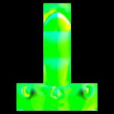

从 Mudbox 到 Arnold 的向量置换
在本教程中，我们将介绍只使用一个球体和一个向量置换贴图来渲染头部模型的过程。向量置换贴图是向场景中添加细节的一种强大而又高效的方法，同时又不需要管理复杂的几何体。它们为处理来自三维雕刻应用程序和 Arnold 的模型提供了非常高效的工作流。与只使用一条线作为顶点法线的传统灰度置换贴图不同，向量置换贴图具有表示 XYZ 置换方向和大小的 RGB 值。这意味着它们并不遵循固定的曲面法线，而是可以向任意方向移动，包括相互重叠。
但是，向量置换贴图的文件大小更大，因为它们必须存储比常规置换贴图更多的信息。另外还请记住，向量置换贴图与法线置换贴图一样，都不是放之四海皆准的理想方法。例如，使用向量置换贴图时，UV 接缝可能会出现问题。
非常感谢才华横溢的 Zeno Pelgrims 为本教程提供资源和帮助。
要下载 sphere.obj、向量置换贴图和漫反射颜色贴图，请单击此处。
导入 sphere.obj 文件时，请确保启用“纹理坐标”(Texture Coords)（默认为禁用）。否则，UV 将丢失，得到的置换将不正确。
|  |  |
|
| 未使用向量置换的球体 | 向量置换贴图 | 使用向量置换的球体 |
Mudbox
已从 Mudbox 使用以下设置提取了原始头部雕刻。

Mudbox 雕刻细节
- 向量置换通过 Mudbox 中的以下菜单提取自原始头部模型：“UV 和贴图 > 提取纹理贴图 > 新建操作”(UVs & Maps > Extract Texture Maps > New Operation)
- Mudbox 提供了以下设置用来从模型中提取纹理。在本例中，我们选择了“向量置换贴图”(Vector Displacement Map)，并将“向量置换”(Vector Displacement)更改为“绝对切线”(Absolute Tangent)。确保贴图使用 32 位浮点深度进行保存，并具有足够高的分辨率。这将使我们在 Arnold 中获得精确置换的渲染。
请确保使用 32 位或 16 位浮点格式存储图像，而不是整数格式。整数格式将无法正常工作。这是因为整数格式不支持负像素值，而浮点置换贴图需要使用负像素值。
Maya
- 打开模型 - sphere.obj。您应该会看到名为 obj_base 的原始细分立方体。
obj_base
向量置换着色器
- 为球体模型指定一个 standard_surface 着色器。创建图像文件纹理并打开文件 Diffuse_colour.jpg。将它连接到 base_color 和 sss_color 属性。将 sss_weight 增加到 0.5 左右。
- 创建一个置换着色器，并将其连接到标准着色器着色组的“置换材质”(Displacement mat)属性。
- 创建一个图像文件纹理，然后打开向量置换贴图 - mudbox_vdisp.tif。将其连接到置换着色器的“向量置换”(Vector Displacement)属性，如下图所示。将“比例”(Scale)增大为 1，并确保将“向量空间”(Vector Space)设置为“切线”(Tangent)。
“向量空间”(Vector Space)设置为“切线”(Tangent)
- 最终着色网络应类似下图。
细分
- 确保您的球体几何体有足够的细分，否则置换效果看起来将不正确。在本例中，细分“迭代次数”(Iterations)为 6，“类型”(Type)设置为“Catclark”就足够了。
在下面的图像中，您可以看到 subdivision_iterations 为 4 和 6 时，在质量方面存在细微的差异。
| 2 | 4 | 6 |
_工具_着色器可用于在渲染置换贴图时诊断问题。
工具着色器。“着色模式”(Shade Mode)设置为“ndoteye”，“叠加模式”(Overlay Mode)设置为“多边形线”(Polywire)。
有关使用 MtoA 渲染 Mudbox 向量置换的教程到此结束。